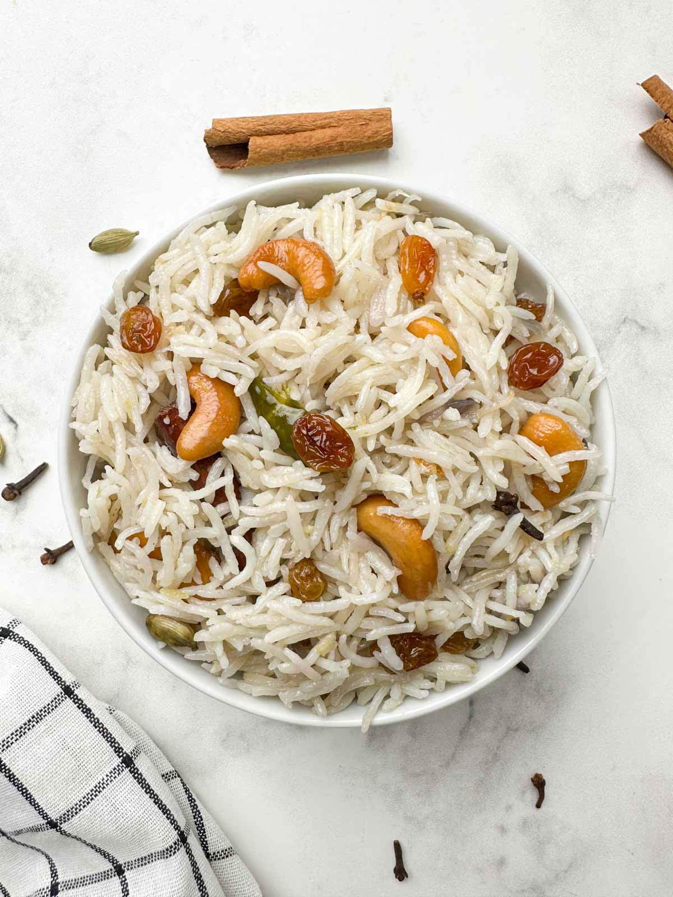

Ghee Rice
⭐⭐⭐⭐⭐ 4.8 Rating | ⏱ 10 Minutes | 🍽 4 Servings
Category
Lunch / Dinner
Difficulty
Easy
Calories
380 kcal
Cooking Style
Tempered
📋 Ingredients
- 1.5 cups Basmati or Jeerakasala/Kaima rice
- 3 cups water
- 3 tbsp pure ghee
- 1 bay leaf
- 1 inch cinnamon stick
- 3 green cardamoms
- 4 cloves
- 1 star anise
- 1 medium onion (thinly sliced)
- 10-12 cashews
- 10-12 raisins
- 1 green chilli (slit, optional)
- Salt to Taste
🍳 Required Utensils
- Heavy-bottomed pot/pressure cooker
- fine mesh strainer
- frying pan
- silicone spatula
📖 Introduction
Ghee Rice (Neychoru) is a classic aromatic South Indian rice dish made by roasting fragrant short-grain or Basmati rice in clarified butter (ghee) alongside whole spices, caramelized onions, and golden nuts.
🔬 Principle
The core culinary technique relies on blooming fat-soluble whole spices and lightly frying raw rice grains in hot ghee. Frying coats the starch layer of each grain, preventing stickiness during boiling and ensuring distinct, fluffy grains steeped in rich butter aroma.
👨🍳 Procedure
- Wash and Drain Rice
- Rinse the rice under cold water 3–4 times until clear.
- Drain completely in a fine mesh sieve for 15 minutes.
- Fry Garnishes in Ghee
- Heat 3 tbsp ghee in a heavy-bottomed pot.
- Fry cashews until golden, then raisins until plump; remove both.
- fry half the sliced onions until deep golden brown; remove and set aside.
- In the remaining hot ghee, add bay leaf, cinnamon, cardamoms, cloves, star anise, and green chilli.
- Sauté on medium heat for 30 seconds until highly fragrant.
- Add the remaining raw sliced onions and sauté until translucent.
- Add the drained rice to the pot.
- Gently roast in ghee on low-medium heat for 2–3 minutes until the grains become fragrant and glossy.
- Do not break the grains.
- Pour in 3 cups of hot water and salt.
- Bring to a rapid boil, cover with a tight lid, lower heat to minimum, and cook for 8–10 minutes until water is absorbed.
- Turn off heat and let it rest sealed for 10 minutes.
- Gently fluff the rice with a fork.
- Top with the reserved fried cashews, raisins, and golden brown onions before serving.
⚠ Precautions
- High in calories and saturated fats.
- Individuals with cardiovascular conditions or strict caloric restriction should consume in moderation.
💡 Chef Tips
- Pairing warm ghee rice alongside hot, puffed pooris provides a rich meal combo—use spicy potato masala or chicken kurma as a common gravied bridge between both.
- Maintain a strict 1:2 rice-to-water ratio for Basmati rice, or 1:1.75 if using Kerala Jeerakasala/Kaima rice.
- Never open or fluff the rice immediately after turning off the heat the 10-minute rest allows steam to redistribute and firm the grains.
🥗 Nutrition Facts
| Nutrient | Amount |
|---|---|
| Calories | 380 kcal |
| Protein | 6 g |
| Carbohydrates | 52 g |
| Fat | 16 g |
| Fiber | 2 g |
🍽 Serving Suggestions
- Pair with rich gravies like Malabar chicken curry, mutton kurma, vegetable stew, or paneer butter masala.
- Serve alongside potato masala pooris, coconut chutney, fresh onion raita, and hot lime pickle.
🌿 Health Benefits
- Ghee is rich in short-chain fatty acids (butyrate) which aid digestion and facilitate the absorption of fat-soluble vitamins (A, D, E, K).
✅ Result
A fluffy, golden-hued rice dish packed with warm botanical aromas (cardamom, cinnamon, cloves), a rich buttery mouthfeel, and a crunchy contrast from caramelized onions and roasted cashews.
🎥 Watch Recipe Video
Learn the complete recipe by watching the step-by-step video.
▶ Watch on YouTube